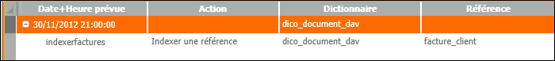
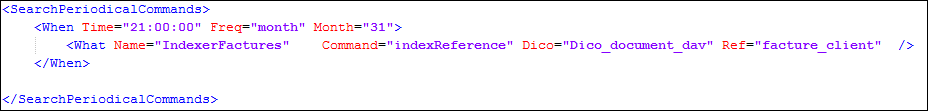

La balise <What> permet de définir les actions à réaliser. Elle est obligatoirement incluse dans une balise <When> ce qui permet de définir plusieurs actions avec la même périodicité.
L’attribut Name donne un nom qui apparaîtra dans la console. Ce nom doit être unique.

L’attribut Command définit l’action à exécuter:
"indexReference" pour un seul document
"indexDictionary" pour tout un dictionnaire
"indexAll" pour tous les documents
"eraseIndexAll" pour effacer la base Search et tout réindexer.
Les attributs facultatifs Dico et Ref permettent d’indiquer le nom du dictionnaire et la référence du document pour les commandes "indexReference" et "indexDictionary"
